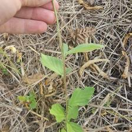
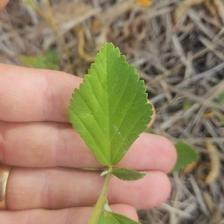
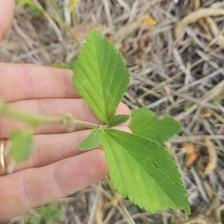

22–29
☀️ Open Cultivation



Tropical vegetable producing edible pods. Royal Burgundy variety has beautiful red pods. Needs heat - won't grow well in cool weather. Pick pods young and often.
Fast-growing summer annual with large flower heads. Edible seeds. Excellent biomass - stalks make good mulch material. Deep taproots break compaction.
Fast-growing root vegetable ready in 3-4 weeks. Sow direct in successions. Good for breaking compacted soil. Daikon types excellent for deep soil breaking.

Classic Australian grey pumpkin with dense orange flesh. Excellent keeper - stores for months. Sweet nutty flavor.

Aromatic herb - leaves (cilantro) and seeds both used. Bolts quickly in heat - plant in cool season or part shade. Self-seeds readily. Attracts beneficial insects.
Syntropic agriculture mimics natural forest ecosystems by layering plants at different heights. Instead of clearing land for monocultures, we build stacked polycultures where every species has a role — fixing nitrogen, producing biomass, attracting pollinators, or feeding people.